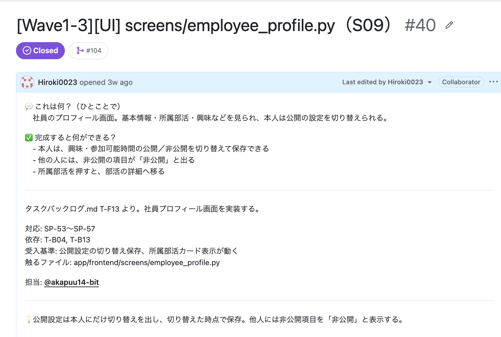

AIエージェント活用による開発自動化と品質向上 ― これまでの取り組み紹介
AI駆動開発のキーポイント ―「確率」を仕組みでコントロールする
正しく進む確率を、仕組みで上げる。これがこの資料の背骨です。
例1 .md ファイルで出力を制御する
役割・話し方・やってよいこと／いけないことを .md に書いて、毎回読ませます。たとえば「文書に書いていないことは作らず、『仕様に書かれていません』と報告して止まる」というルールです。ぶれ幅そのものを狭めます。
例2 複数のエージェントでレビューする
1体が書き、別の1体が確かめます。2体とも同じところを見落としたときだけ、ミスが残ります。2体で見ることで、正しい成果物が残る確率が上がります。
実例: テストのナレッジページ（テストの企画から実行まで）では、yamapi の下書きを kurosu が事実確認しました。結果は必須の修正2件・推奨3件・任意2件で、必須の2件を直してから公開に回しました（2026-10-16、統括の記録）。
体制（この資料に出てくる人とAI）
はなえ（PdM）・だーあさ（BE）・あかぷ（App/UI）
窓口・割り振り・レビュー。提案はするが決断はしない
設計
フロント
BE/DB
テスト・検証
書記
最初の仕様書の質を大事にする
5文書（要求・要件・仕様・設計・テスト設計）をAIと作る前に、元になる資料の質を上げておくことが大事でした。特に重要なのは次の2つです。
- 課題設定と要求の具体化 ― 課題を深掘りして「本当に解くべき課題」を決め、それを解決するために「何を作りたいか」（要求）を言葉にする。
- 仕様のキー部分の具体化 ― どんなフローで動くか。フロントとバックの両方をイメージできるとよい。
今回は、はなえさんが要件定義書と開発仕様書で具体化してくれていたので、スムーズに進みました。
元の資料 → 5文書
ビジョン
目的・ユーザー・仮説・利用フロー
構成・画面S01〜S10・データ
キー部分の例: 「部活を探す」フロー（要件定義書 v1.1 7章A）
画面の流れ（フロント）の途中に、「DBに保存・幹事に通知」（バック）が1行で入っています。開発仕様書 v0.1 には、画面の一覧（S01〜S10）と、データの表（社員・部活・開催・申込・メッセージ・通知など）まで書かれていました。
実装環境の整備（5文書の後にやったこと）
1. 開発の全体像の見える化
Wave0〜4 のタイムラインと全タスクの早見表を 開発ロードマップ（overview） にまとめました。2. GitHub Issues の具体化
タスクを Issue にして、目的・受入基準・触るファイルを書きました。create_issues.sh で37件を一括作成（2026-09-28）。3. 開発ハブ
日々の入口になるリンク集（開発ハブ）。ダッシュボードは④で紹介します。つまずいたこと
| つまずき | 起きたこと |
|---|---|
| 全体像が見えない | 5文書だけでは全体像が見えず、チームで具体化できなかった |
| Issue が記号だらけ | Issue の説明が「I/F契約の何番」のような記号と数字だけで、何を作るのかが見えなかった |
| 完了条件が難しい | 完了条件が、初心者に分かる言葉になっていなかった |
⇒ 何を作るのか、受入基準は何かを、簡単に理解できるようにする。（⑥の「次の挑戦」1につながります）
Issue の具体化（before / after）

after（上半分）
「💬 これは何？」「✅ 完成すると何ができる？」。初心者向けに書き足した部分です。何を作るのか、できあがると何ができるのかを、普通の言葉で書いています。
before（下半分）
「対応: SP-53〜SP-57」「受入基準」「触るファイル」。元の書き方です。記号と番号が中心で、文書を開かないと中身が分かりません。
進捗管理ダッシュボードの自動化
前提: GitHub Pages とは
GitHub のリポジトリに置いた HTML を、そのまま Web ページとして公開できる機能です。公開リポジトリなら無料プラン（GitHub Free）で使えます。非公開リポジトリで使うには、有料プラン（GitHub Pro・GitHub Team など）が必要です。
使い方の流れ
この案件では、dashboard.yml が main への push のたびに自動で公開しています。
狙い
開発段階ごと・人ごとに、進捗を見える化すること。PR本文に Closes #番号 と書いてマージすると、Issue が自動でクローズされます。これで、進捗管理の手間をゼロにしました。
Closes #12▶
マージ▶
Issue が自動クローズ▶
ダッシュボードを再生成
つまずいたこと
開発中に仕様の不備や抜け漏れが見つかり、I/F契約を修正しました。その修正で増えたタスクは Issue 管理の外になり、Issue 側では後から追えませんでした。PR の記録には残っているので、後追いはできます。
テストは準備が大事
1. 先に5文書のミスを直す
実装と文書のずれ、更新漏れを、テストの前に直します。
実例: 2026-10-10 のテストレビューで、仕様と実装のずれが34項目見つかりました。原因は、9/27 の初回提出の後、文書の更新（v0.2）が漏れていたことでした（統括の記録）。
次の開発でチャレンジしたいこと
1. Issue 設計の具体化
実装しやすく、完了条件がはっきりした Issue にする（③のつまずきから）。
2. PR レビューの自動化
今回、はなえさんにコードレビューの負荷が集中した反省から。Claude が1時間に1回 PR をレビューしてマージまで判断できれば、人のレビューは要所だけに絞れる。そのためには Issue の完了条件の具体化が前提。
3. メンバーが判断できる柔軟性と、ルールの明確化
反省：担当者の裁量があいまいで、自由に工夫する余地も、迷わず進めるためのルールもなかった。
次は：「自分で決めてよいこと／確認が要ること」を最初に決める。（例：デザインの変更は担当者が判断、I/F契約の変更はPMに確認）
ベーさんのルール設定がお手本だった。
4. .md ファイルのアップデート
まず「どの確率を制御したいか」を考えてから、.md を改善したいです。
事例: ナレッジの蓄積とミスの削減（同じミスを繰り返す確率を下げる）を狙って、週1回の自動化を入れました。しかし、うまくいきませんでした。自動で起動していなかったためです。2026-10-15 から、ナレッジへの還元は手動運用にしています（01_ナレッジ/log.md）。
5. 仕様のビジュアル化
反省：仕様変更を決めたとき、何を変えたのかを具体的に理解できていなかった。仕様書が .md で、構造をつかみにくかった。
次は：仕様のキーになる部分を図にし、変更前・変更後を並べて、変わった箇所に色を付けて共有する。
- 主要フロー図を軸にする（例：部活を探す → 体験を申し込む → 幹事に通知。画面・処理・DB がどの順で動くか）。
- 画面遷移図と、データ構造図（ER図）を添える。
- アーキテクチャ図は変わりにくいので、最初に1枚。
チームメンバーからのフィードバック（あかぷの兄貴）
当日、あかぷの兄貴にお話しいただきます。
感想
苦労したポイント
改善点
質疑
- STEP3 で、まず真似してみたいのはどれ？
- 自分のチームで「確率を上げたい」のはどの場面？
- AIに任せること／人が決めることの線引き、どうする？
もっと詳しく
- 📘 Munder Difflinチーム開発 実践ナレッジ ― ハイブの回し方・V字・進捗基盤・ハマりどころ集
- 🧪 テストの企画から実行まで ― U・I・S・A と、実行・確認の流れ
- 📕 『プロフェッショナルAI駆動開発〜確率論から決定論へ AIの揺らぎを制御する開発フレームワーク〜』（松本淳太郎・サカモト 著、技術評論社） ― てらおさんが紹介してくれた本です。表紙には「AI駆動開発に必要な4つの制御」として、コンテキスト／テスト／オーケストレーション／相互レビューが挙げられています。
小話: 出張中、半分読んだところで機内の前ポケットに差したまま紛失し、2冊目を購入しました。